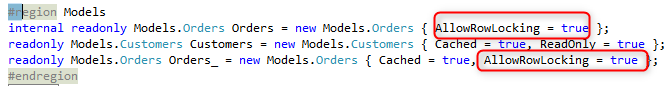

Row Locking
Every Controller has a property called RowLocking which controls when locking shall be applied for this controller.
The different locking strategies are detailed in the documentation of LockingStragey. To see the comparison of the different strategies to magic see Locking Strategy in magic
When Will the locking start?
The start of the locking is controlled by the RowLocking property - and is based on the strategy.
- None - the lock will never start
- OnRowLoading - the lock wills start once the row is loaded - just before the
EnterRowevent. - OnRowSaving - the lock with start before the row is saved to the database - after the
SavingRowevent. - OnUserEdit - the lock will start when the user edits a value on the screen
LockCurrentRow method
When using the OnUserEdit LockingStrategy - the lock can be started by calling the LockCurrentRow() method.
In the migrated code, you'll see a call to the LockCurrentRow() method whenever magic would have started a lock.
When the LockCurrentRow() method is called for the first time since entering the row, it'll lock the row. Any subsequent calls to the LockCurrentRow() method will be ignored - since the row is already locked.
You may see many calls in the migrated code to LockCurrentRow() in controllers that were migrated and were using the OnModify magic locking strategy, that is because magic was starting locks on updates and call programs based on in many different (And sometimes mysterious) scenarios.
We made sure the make the call to LockCurrentRow apparent and to highlight this behavior.
If you see many subsequent calls to LockCurrentRow(), don't worry about it - as only the first one locks.
LockCurrentRowIfItWasChanged method
It's a variation of the LockCurrentRow method that will only lock if the row was already changed, based on the RowChanged property.
It is used in the migrated code whenever magic was locking but not always - just when the row was changed.
Which entities will be locked?
When the lock starts, all entities for which the AllowRowLocking property is set, will be locked.

Note that if the same entity was already defined in a calling controller with
AllowRowLocking = true, than that same entity in this controller will also be treated as ifAllowRowLockingis set to true. that is controlled by theShouldDetermineNameAcordingToCallStackproperty of the entity. Set this property to false to disable that behavior.
When will the lock be released?
Any row that was updated will remain locked until the end of the transaction.
Rows that were not updated, will have their lock released according the the specific database that is in use.
- For Oracle, SQL Server ODBC, and oledb the lock will only be released after the transaction is committed.
we are currently working on a solution where in SQL server the lock could be released after it was left - let us know if you're interested.
- For Btrieve, Pervasive, DB2 Iseries, DB2, Easycom - the lock will be released after you leave the row (after the
SavingRowevent)
Locking and Transactions
- Btrieve (Pervasive) and eascom ISAM - allows for locking without a transaction.
- In SQL Server, Oracle, DB2, ODBC etc... you can only lock if a transaction was already opened.
we are current working on a solution where in SQL server and DB2 you'll be able to lock without a transaction.
Help us improve, Edit this page on GitHub
or email us at info@fireflymigration.com